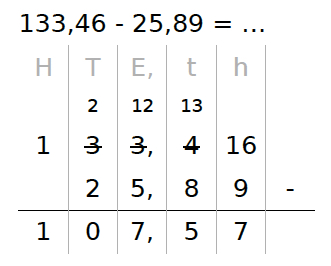

Voorbeeld
Dit is een voorbeeld met decimale getallen. Het werkt hetzelfde. Zet de Honderdtallen, Tientallen, Eenheden, tienden en honderdsten netjes onder elkaar.
- 6 - 9 kan niet, dus eentje lenen bij de buren;
de 4 van de buren wordt een 3, de 6 wordt een 16; - 16 - 9 = 7;
- 3 - 8 kan niet, dus eentje lenen bij de buren;
de 3 van de buren wordt een 2, de 3 wordt een 13 - 13 - 8 = 5;
- 2 - 5 kan niet, dus eentje lenen bij de buren;
de 3 van de buren wordt een 2, de 2 wordt een 12 - 12 - 5 = 7;
- 2 - 2 = 0;
- 1 - 0 = 1.